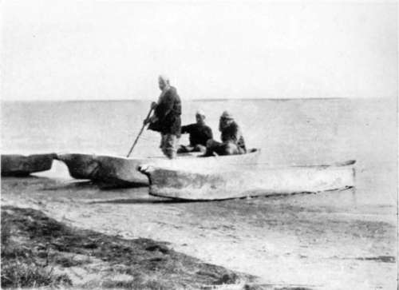
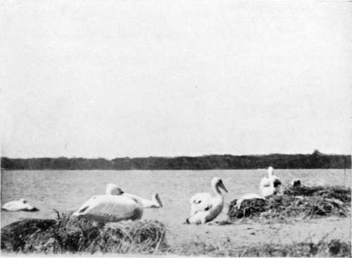
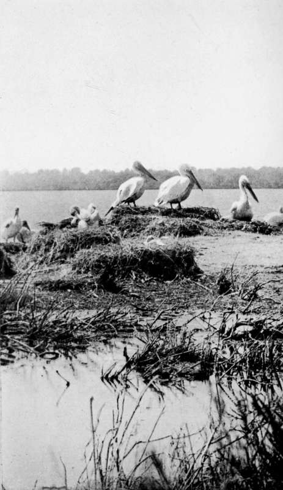

The Quest Of The Pelican : Albania. Part 8
Description
This section is from the book "Bird-Hunting Through Wild Europe", by R. B. Lodge. Also available from Amazon: Bird-Hunting Through Wild Europe.
The Quest Of The Pelican : Albania. Part 8
In spite of the vendetta our host saddled his mare in the morning and accompanied us on our way through the forest in order to take us to two fishermen to whom he had sent word overnight, and who were considered to be the most likely persons to know about the Pelicans.
It was a happy thought to send for these men, for it was through them that we at last succeeded in finding the Pelicans' nesting-place. Clad in loose, brown garments, with keen, wild faces and piercing eyes, these two fishermen resembled birds of prey. They were very civil, and said at once that they knew where the Pelicans nested, and that they could conduct us to the place. One of them could speak Italian, and described their nests and eggs, so that we started off with them in two rude dug-out canoes in high spirits. The Baron squatted in the bottom of one, while I did the same in the other, and the men paddled with single paddles at the stern. There were numbers of Pelicans swimming about, and presently we could see in front of us on the horizon a white mass. These our guides declared to be Pelicans sitting on their nests.
Embarking with the fishermen
Pelicans
How eagerly we scrutinized them through our glasses as we drew nearer and nearer! After a time it appeared as if the. birds were sitting on the farther shore in front of a belt of tamarisks, but as we advanced we found that this was not the case. The nests were at last made out to be on two low, sandy islets some distance from the shore. The men, on being asked, said they could take us to within thirty yards of the islands without causing much disturbance. This we found to be the case; and accordingly I stepped out of my canoe with the camera (the water was not much more than knee-deep) and proceeded to make sure of some photographs in case of not being able to get at closer quarters. But in our hurried journey across country we had not been able to bring more than one box of photographic plates in addition to those already in position in the slides ; and when I started to use these I found to my dismay that the whole boxful had been reduced to powder. The pack-saddle had undoubtedly received a hard knock against a tree or rock, probably in traversing the forest the previous day.
There was nothing left to do but to examine the colony, take a few eggs, and hurry back for a better supply of plates, and to come again provided with a tent so as to be able to camp out on the shores of the lagoon within easy reach of the islands. We could thus be independent of the villagers, be much nearer the Pelicans, and could remain as long as we liked.
It was still only early in the morning, and by riding hard we reached the Bey's house that same night, and the Consulate the following day.
At once we set to work to pack the tent and provisions, and started all the things off early the next morning on two pack-horses, while we followed later, after breakfast, with Marco. One of the fishermen- the younger one-accompanied the pack-horses, having brought the eggs we had taken well packed in moss in a basket. He had done the whole distance on foot, arriving overnight in a drenched condition, as there had been a series of thunderstorms all day. He was now walking back, very footsore, and very stiff from having slept in his saturated clothes, but very contented with the liberal backsheesh I had given him for bringing them safely.
Pelicans On Their Nests (Pelecanus Crispus)
Halting again at the Bey's for something to eat and to rest the horses, in the middle of the day, we pushed on as hard as we could, and reached the shores of the lagoon in the evening. Before night fell we had pitched the tent in the forest, and made a rousing fire.
The villagers were amazed at our preferring to sleep in the forest, affirming that it was not safe, many robbers being known to be about ; and they pressed us repeatedly to put up in the village. One man was quite importunate in begging us to sleep at his house. But we were a strong party, four men besides ourselves, all of us well armed with Martinis and magazine rifles ; and we decided to stay where we were and chance any attack.
As a matter of fact two nights passed off peaceably, although there was a certain amount of danger -or would have been for a weaker party. And we were much more comfortable in the well-appointed tent with our own things and Marco to wait on us and cook, than in a smoky and dirty native hut.
We slept comfortably if not luxuriously, B- in his camp-bed, and I in my sleeping-bag and rug placed on an indiarubber ground sheet, my constant companions in all these wanderings in strange countries, bird-hunting and collecting.
These articles don't take up much room on a pack-horse, and are less bulky and weighty than a tent ; and it is a great advantage when travelling in a wild and sparsely inhabited country to know that in case of need one can sleep out in the open if belated and unable to reach one's destination by nightfall. For after dark it is impossible to travel over such a rough country. Snugly enveloped in my bag, I have slept warmly and comfortably on cold nights with ice on the ground outside the tent, and even in the open air on damp ground during heavy rain.
Turning out early in the morning, we were soon afloat with our friends the fishermen, and on reaching the islands I was landed quietly with camera and several dozen plates, and left to myself. Bremained on a small island opposite, where, prone on the ground, he watched the proceedings through his glass.
Continue to:
- prev: The Quest Of The Pelican : Albania. Part 7
- Table of Contents
- next: The Quest Of The Pelican : Albania. Part 9